Arte en gouache · palmares
Ver el README.
0 · Caras: fijar la cara 6/6

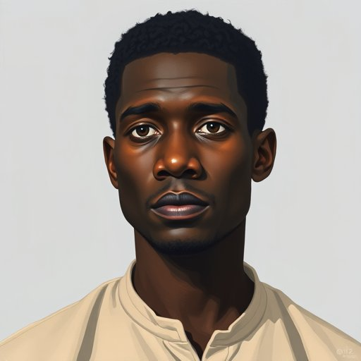
prompt
Gouache painting for a historical strategy game, flat opaque color shapes, simple graphic forms, matte paper texture, limited palette. Portrait of an Afro-Brazilian man of Central African Kongo and Mbundu descent, from the quilombo of Palmares in northeastern Brazil, a grown adult in his early thirties, with a mature face: a broad face, a strong jaw, a broad nose with a wide base, dark eyes, faint expression lines around the eyes, deep dark brown skin, full lips, short tightly curled black hair, a thick adult neck, broad shoulders and adult body proportions. He wears a plain undyed cotton shirt. Head and shoulders portrait, the head fills the upper half of the frame, face turned slightly to the side, plain flat light grey background.

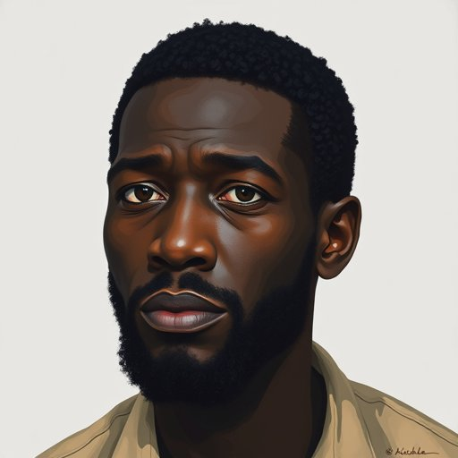
prompt
Gouache painting for a historical strategy game, flat opaque color shapes, simple graphic forms, matte paper texture, limited palette. Portrait of an Afro-Brazilian man of Central African Kongo and Mbundu descent, from the quilombo of Palmares in northeastern Brazil, a grown adult in his early thirties, with a mature face: a broad face, a strong jaw, a wide flat nose, dark eyes, faint expression lines around the eyes, deep dark brown skin, full lips, short tightly curled black hair and a short beard, a thick adult neck, broad shoulders and adult body proportions. He wears a plain undyed cotton shirt. Head and shoulders portrait, the head fills the upper half of the frame, face turned slightly to the side, plain flat light grey background.

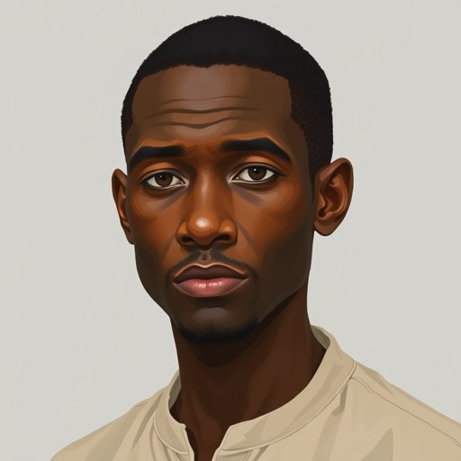
prompt
Gouache painting for a historical strategy game, flat opaque color shapes, simple graphic forms, matte paper texture, limited palette. Portrait of an Afro-Brazilian man of Central African Kongo and Mbundu descent, from the quilombo of Palmares in northeastern Brazil, a grown adult in his early thirties, with a mature face: a broad face, a strong jaw, a broad nose with a rounded tip, dark eyes, faint expression lines around the eyes, deep dark brown skin, full lips, closely shaved black hair, a thick adult neck, broad shoulders and adult body proportions. He wears a plain undyed cotton shirt. Head and shoulders portrait, the head fills the upper half of the frame, face turned slightly to the side, plain flat light grey background.

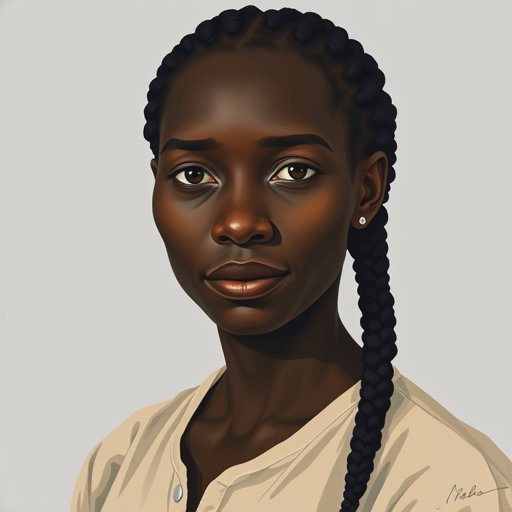
prompt
Gouache painting for a historical strategy game, flat opaque color shapes, simple graphic forms, matte paper texture, limited palette. Portrait of an Afro-Brazilian woman of Central African Kongo and Mbundu descent, from the quilombo of Palmares in northeastern Brazil, a grown adult in her early thirties, with a mature face: a broad oval face, high cheekbones, a broad nose with a wide base, dark eyes, faint expression lines, deep dark brown skin, full lips, black hair in thick braids along the scalp, adult shoulders and adult body proportions. She wears a plain undyed cotton blouse. Head and shoulders portrait, the head fills the upper half of the frame, face turned slightly to the side, plain flat light grey background.

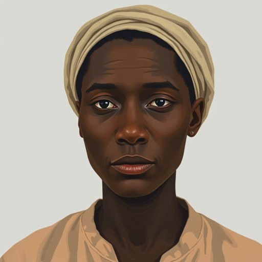
prompt
Gouache painting for a historical strategy game, flat opaque color shapes, simple graphic forms, matte paper texture, limited palette. Portrait of an Afro-Brazilian woman of Central African Kongo and Mbundu descent, from the quilombo of Palmares in northeastern Brazil, a grown adult in her early thirties, with a mature face: a broad oval face, high cheekbones, a wide nose with a rounded tip, dark eyes, faint expression lines, deep dark brown skin, full lips, black hair under a plain cloth head wrap, adult shoulders and adult body proportions. She wears a plain undyed cotton blouse. Head and shoulders portrait, the head fills the upper half of the frame, face turned slightly to the side, plain flat light grey background.

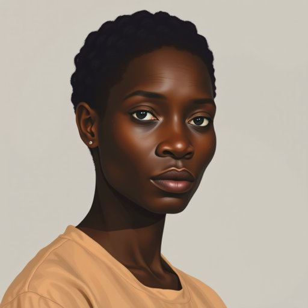
prompt
Gouache painting for a historical strategy game, flat opaque color shapes, simple graphic forms, matte paper texture, limited palette. Portrait of an Afro-Brazilian woman of Central African Kongo and Mbundu descent, from the quilombo of Palmares in northeastern Brazil, a grown adult in her early thirties, with a mature face: a broad oval face, high cheekbones, a broad flat nose, dark eyes, faint expression lines, deep dark brown skin, full lips, short tightly curled black hair, adult shoulders and adult body proportions. She wears a plain undyed cotton blouse. Head and shoulders portrait, the head fills the upper half of the frame, face turned slightly to the side, plain flat light grey background.
1 · Unidades (un arte por unidad: ícono y retrato) 17/17

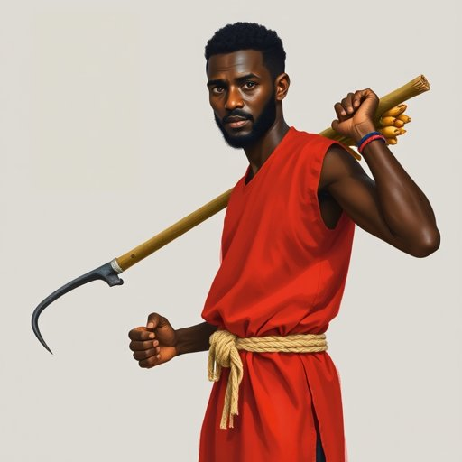

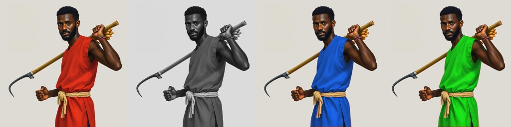
prompt
Gouache painting for a historical strategy game, flat opaque color shapes, simple graphic forms, matte paper texture, limited palette. A farmer holding an iron hoe on his shoulder and a bundle of manioc stems. He wears a plain solid bright red cotton tunic, one flat uniform red color reaching the knees and a palm-fiber cord belt. The figure is an Afro-Brazilian man of Central African Kongo and Mbundu descent, from the quilombo of Palmares in northeastern Brazil, a grown adult in his early thirties, with a mature face: a broad face, a strong jaw, a wide flat nose, dark eyes, faint expression lines around the eyes, deep dark brown skin, full lips, short tightly curled black hair and a short beard, a thick adult neck, broad shoulders and adult body proportions, a mature man of about thirty-five with a strong adult face and smile lines. Natural undyed cotton, palm fiber, wood and iron tones for everything except the red tunic. Waist-up portrait of one single person: the head, shoulders and hands fill the frame, the tool or weapon visible next to the body, three-quarter view, isolated on a plain flat light grey background.

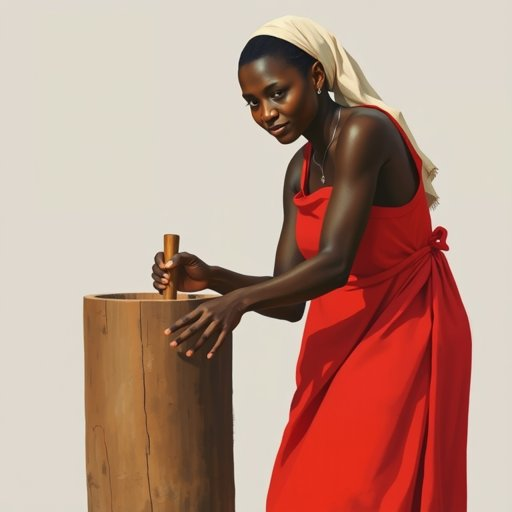

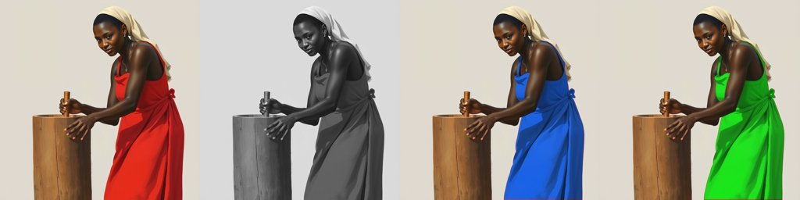
prompt
Gouache painting for a historical strategy game, flat opaque color shapes, simple graphic forms, matte paper texture, limited palette. A woman pounding manioc in a tall wooden mortar with a long wooden pestle. She wears a plain solid bright red cotton tunic, one flat uniform red color reaching her ankles and a plain cloth head wrap. The figure is an Afro-Brazilian woman of Central African Kongo and Mbundu descent, from the quilombo of Palmares in northeastern Brazil, a grown adult in her early thirties, with a mature face: a broad oval face, high cheekbones, a wide nose with a rounded tip, dark eyes, faint expression lines, deep dark brown skin, full lips, black hair under a plain cloth head wrap, adult shoulders and adult body proportions, a mature woman of about thirty-five with a strong adult face, a defined jaw and smile lines. Natural undyed cotton, palm fiber, wood and iron tones for everything except the red tunic. Waist-up portrait of one single person: the head, shoulders and hands fill the frame, the tool or weapon visible next to the body, three-quarter view, isolated on a plain flat light grey background.

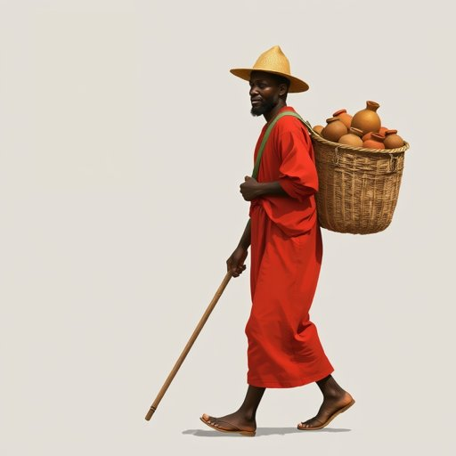

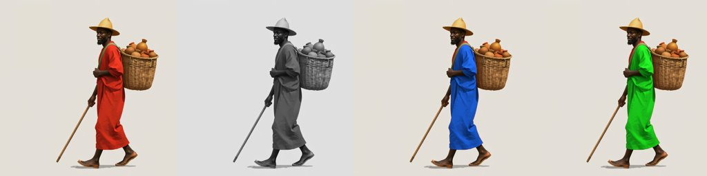
Nombre a revisar por los historiadores.
prompt
Gouache painting for a historical strategy game, flat opaque color shapes, simple graphic forms, matte paper texture, limited palette. A peddler walking with a large basket of palm fiber on his back, full of clay pots, palm baskets and bundles, a walking stick in his hand. He wears a plain solid bright red cotton tunic, one flat uniform red color reaching the knees and a straw hat. The figure is an Afro-Brazilian man of Central African Kongo and Mbundu descent, from the quilombo of Palmares in northeastern Brazil, a grown adult in his early thirties, with a mature face: a broad face, a strong jaw, a wide flat nose, dark eyes, faint expression lines around the eyes, deep dark brown skin, full lips, short tightly curled black hair and a short beard, a thick adult neck, broad shoulders and adult body proportions, a mature man of about thirty-five with a strong adult face and smile lines. Natural undyed cotton, palm fiber, wood and iron tones for everything except the red tunic. Waist-up portrait of one single person: the head, shoulders and hands fill the frame, the tool or weapon visible next to the body, three-quarter view, isolated on a plain flat light grey background.

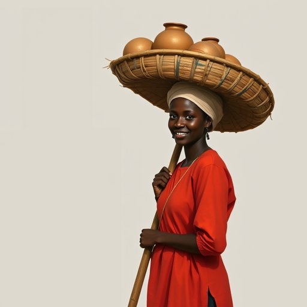

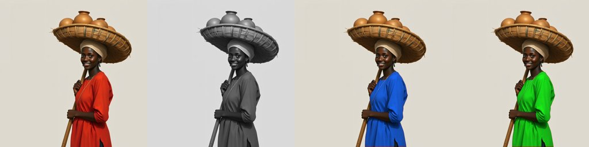
prompt
Gouache painting for a historical strategy game, flat opaque color shapes, simple graphic forms, matte paper texture, limited palette. A woman trader carrying a wide flat basket on her head with clay pots and woven palm mats, one hand steadying it. She wears a plain solid bright red cotton tunic, one flat uniform red color reaching her ankles. The figure is an Afro-Brazilian woman of Central African Kongo and Mbundu descent, from the quilombo of Palmares in northeastern Brazil, a grown adult in her early thirties, with a mature face: a broad oval face, high cheekbones, a wide nose with a rounded tip, dark eyes, faint expression lines, deep dark brown skin, full lips, black hair under a plain cloth head wrap, adult shoulders and adult body proportions, a mature woman of about thirty-five with a strong adult face, a defined jaw and smile lines. Natural undyed cotton, palm fiber, wood and iron tones for everything except the red tunic. Waist-up portrait of one single person: the head, shoulders and hands fill the frame, the tool or weapon visible next to the body, three-quarter view, isolated on a plain flat light grey background.

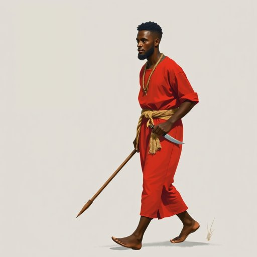

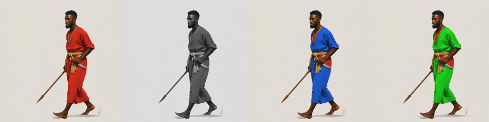
prompt
Gouache painting for a historical strategy game, flat opaque color shapes, simple graphic forms, matte paper texture, limited palette. A forest scout walking carefully, holding a short spear and a long iron knife, looking ahead. He wears a plain solid bright red cotton tunic, one flat uniform red color reaching the knees and a palm-fiber cord belt. The figure is an Afro-Brazilian man of Central African Kongo and Mbundu descent, from the quilombo of Palmares in northeastern Brazil, a grown adult in his early thirties, with a mature face: a broad face, a strong jaw, a wide flat nose, dark eyes, faint expression lines around the eyes, deep dark brown skin, full lips, short tightly curled black hair and a short beard, a thick adult neck, broad shoulders and adult body proportions, a mature man of about thirty-five with a strong adult face and smile lines. Natural undyed cotton, palm fiber, wood and iron tones for everything except the red tunic. Waist-up portrait of one single person: the head, shoulders and hands fill the frame, the tool or weapon visible next to the body, three-quarter view, isolated on a plain flat light grey background.

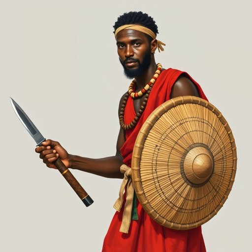

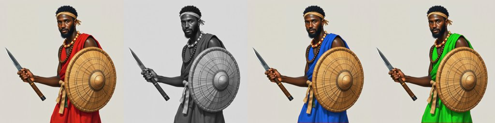
prompt
Gouache painting for a historical strategy game, flat opaque color shapes, simple graphic forms, matte paper texture, limited palette. A warrior holding a long iron knife (facão) and a round shield of woven palm fiber, ready to fight. He wears a plain solid bright red cotton tunic, one flat uniform red color reaching the knees, a necklace of beads and a cloth band around the head. The figure is an Afro-Brazilian man of Central African Kongo and Mbundu descent, from the quilombo of Palmares in northeastern Brazil, a grown adult in his early thirties, with a mature face: a broad face, a strong jaw, a wide flat nose, dark eyes, faint expression lines around the eyes, deep dark brown skin, full lips, short tightly curled black hair and a short beard, a thick adult neck, broad shoulders and adult body proportions, a mature man of about thirty-five with a strong adult face and smile lines. Natural undyed cotton, palm fiber, wood and iron tones for everything except the red tunic. Waist-up portrait of one single person: the head, shoulders and hands fill the frame, the tool or weapon visible next to the body, three-quarter view, isolated on a plain flat light grey background.

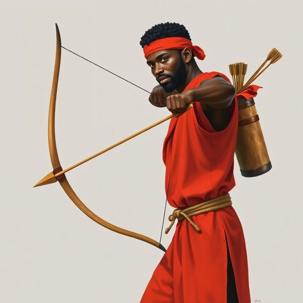

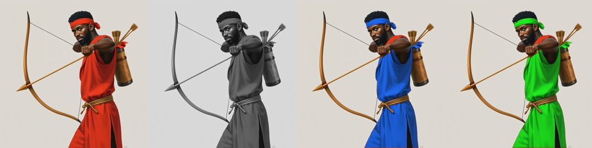
prompt
Gouache painting for a historical strategy game, flat opaque color shapes, simple graphic forms, matte paper texture, limited palette. An archer drawing a long wooden bow with an arrow, a quiver of arrows at his back. He wears a plain solid bright red cotton tunic, one flat uniform red color reaching the knees and a cloth band around the head. The figure is an Afro-Brazilian man of Central African Kongo and Mbundu descent, from the quilombo of Palmares in northeastern Brazil, a grown adult in his early thirties, with a mature face: a broad face, a strong jaw, a wide flat nose, dark eyes, faint expression lines around the eyes, deep dark brown skin, full lips, short tightly curled black hair and a short beard, a thick adult neck, broad shoulders and adult body proportions, a mature man of about thirty-five with a strong adult face and smile lines. Natural undyed cotton, palm fiber, wood and iron tones for everything except the red tunic. Waist-up portrait of one single person: the head, shoulders and hands fill the frame, the tool or weapon visible next to the body, three-quarter view, isolated on a plain flat light grey background.

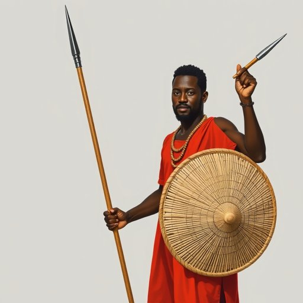

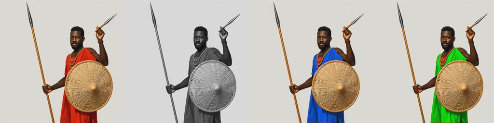
prompt
Gouache painting for a historical strategy game, flat opaque color shapes, simple graphic forms, matte paper texture, limited palette. A spearman holding upright a long spear with a broad iron point and a round shield of woven palm fiber. He wears a plain solid bright red cotton tunic, one flat uniform red color reaching the knees. The figure is an Afro-Brazilian man of Central African Kongo and Mbundu descent, from the quilombo of Palmares in northeastern Brazil, a grown adult in his early thirties, with a mature face: a broad face, a strong jaw, a wide flat nose, dark eyes, faint expression lines around the eyes, deep dark brown skin, full lips, short tightly curled black hair and a short beard, a thick adult neck, broad shoulders and adult body proportions, a mature man of about thirty-five with a strong adult face and smile lines. Natural undyed cotton, palm fiber, wood and iron tones for everything except the red tunic. Waist-up portrait of one single person: the head, shoulders and hands fill the frame, the tool or weapon visible next to the body, three-quarter view, isolated on a plain flat light grey background.

prompt
Gouache painting for a historical strategy game, flat opaque color shapes, simple graphic forms, matte paper texture, limited palette. A heavy tree trunk battering ram with a sharpened point and rope handles along its sides, lying on two log rollers. Single object centered, clear silhouette, isolated on a plain flat light grey background, three-quarter view.

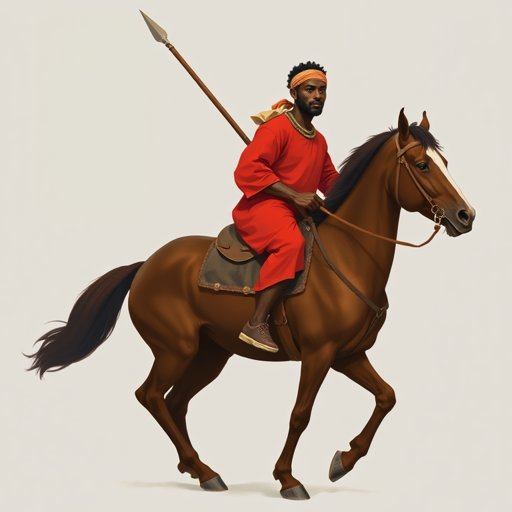

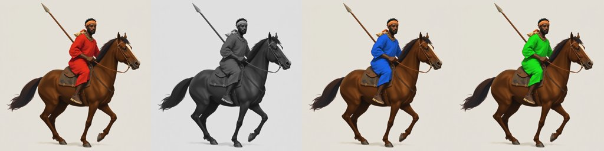
prompt
Gouache painting for a historical strategy game, flat opaque color shapes, simple graphic forms, matte paper texture, limited palette. A rider on a sturdy brown horse, riding with a simple leather saddle, holding a long spear. He wears a plain solid bright red cotton tunic, one flat uniform red color and a cloth band around the head. The rider is an Afro-Brazilian man of Central African Kongo and Mbundu descent, from the quilombo of Palmares in northeastern Brazil, a grown adult in his early thirties, with a mature face: a broad face, a strong jaw, a wide flat nose, dark eyes, faint expression lines around the eyes, deep dark brown skin, full lips, short tightly curled black hair and a short beard, a thick adult neck, broad shoulders and adult body proportions, a mature man of about thirty-five with a strong adult face and smile lines. Natural undyed cotton, palm fiber, wood and iron tones for everything except the red tunic. One single rider and horse, the whole horse visible, three-quarter view, isolated on a plain flat light grey background.

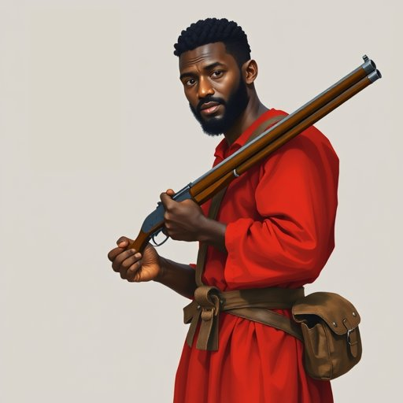

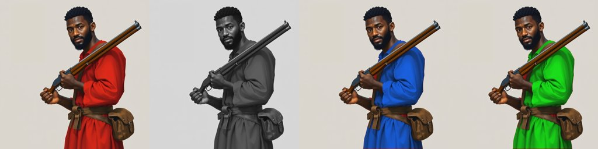
Armas de las correrías y del trato a escondidas.
prompt
Gouache painting for a historical strategy game, flat opaque color shapes, simple graphic forms, matte paper texture, limited palette. A gunman holding a long matchlock gun (espingarda) with a wooden stock, a powder horn and a leather bag at his side. He wears a plain solid bright red cotton tunic, one flat uniform red color reaching the knees. The figure is an Afro-Brazilian man of Central African Kongo and Mbundu descent, from the quilombo of Palmares in northeastern Brazil, a grown adult in his early thirties, with a mature face: a broad face, a strong jaw, a wide flat nose, dark eyes, faint expression lines around the eyes, deep dark brown skin, full lips, short tightly curled black hair and a short beard, a thick adult neck, broad shoulders and adult body proportions, a mature man of about thirty-five with a strong adult face and smile lines. Natural undyed cotton, palm fiber, wood and iron tones for everything except the red tunic. Waist-up portrait of one single person: the head, shoulders and hands fill the frame, the tool or weapon visible next to the body, three-quarter view, isolated on a plain flat light grey background.

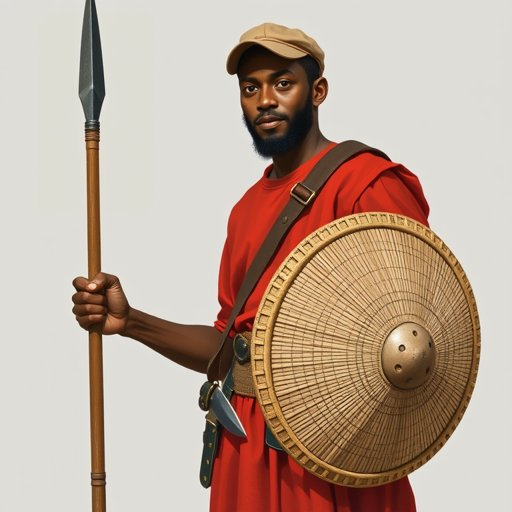

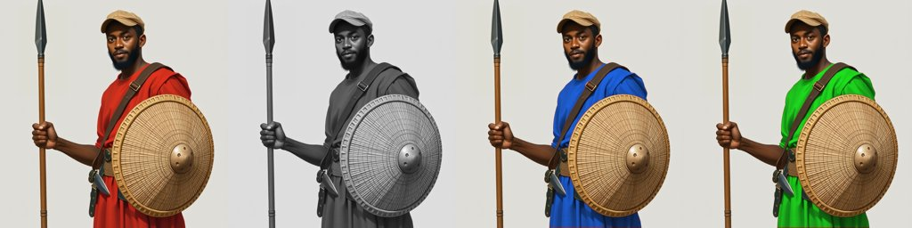
prompt
Gouache painting for a historical strategy game, flat opaque color shapes, simple graphic forms, matte paper texture, limited palette. A veteran defender holding a long spear with a broad iron point and a large round shield of woven palm fiber, a leather belt with a long iron knife, a cloth cap. He wears a plain solid bright red cotton tunic, one flat uniform red color. The figure is an Afro-Brazilian man of Central African Kongo and Mbundu descent, from the quilombo of Palmares in northeastern Brazil, a grown adult in his early thirties, with a mature face: a broad face, a strong jaw, a wide flat nose, dark eyes, faint expression lines around the eyes, deep dark brown skin, full lips, short tightly curled black hair and a short beard, a thick adult neck, broad shoulders and adult body proportions, a mature man of about thirty-five with a strong adult face and smile lines. Natural undyed cotton, palm fiber, wood and iron tones for everything except the red tunic. Waist-up portrait of one single person: the head, shoulders and hands fill the frame, the tool or weapon visible next to the body, three-quarter view, isolated on a plain flat light grey background.

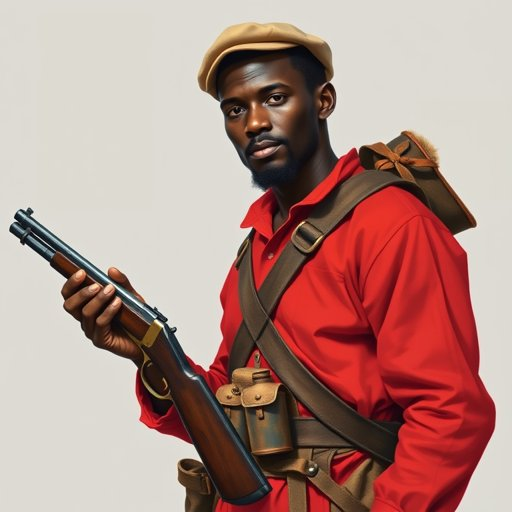

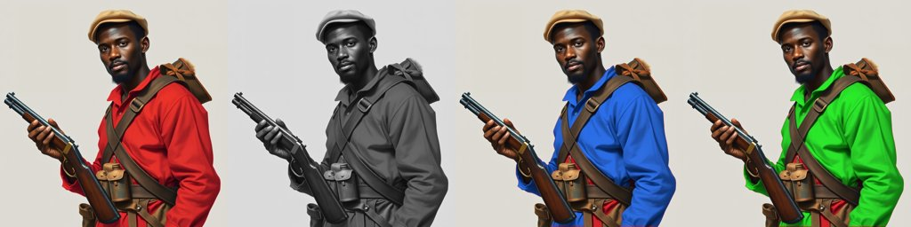
prompt
Gouache painting for a historical strategy game, flat opaque color shapes, simple graphic forms, matte paper texture, limited palette. A veteran gunman holding a matchlock gun, a leather bandolier with powder flasks across the chest, a cloth cap. He wears a plain solid bright red cotton tunic, one flat uniform red color. The figure is an Afro-Brazilian man of Central African Kongo and Mbundu descent, from the quilombo of Palmares in northeastern Brazil, a grown adult in his early thirties, with a mature face: a broad face, a strong jaw, a wide flat nose, dark eyes, faint expression lines around the eyes, deep dark brown skin, full lips, short tightly curled black hair and a short beard, a thick adult neck, broad shoulders and adult body proportions, a mature man of about thirty-five with a strong adult face and smile lines. Natural undyed cotton, palm fiber, wood and iron tones for everything except the red tunic. Waist-up portrait of one single person: the head, shoulders and hands fill the frame, the tool or weapon visible next to the body, three-quarter view, isolated on a plain flat light grey background.

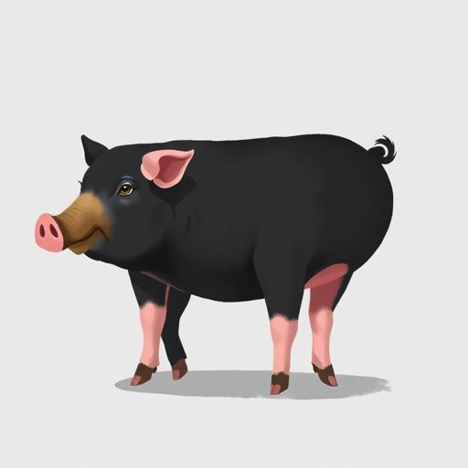
Cerdos criados en los mocambos.
prompt
Gouache painting for a historical strategy game, flat opaque color shapes, simple graphic forms, matte paper texture, limited palette. A single black and pink pig with a long snout, standing. One single animal standing, the whole body visible, three-quarter view, isolated on a plain flat light grey background.

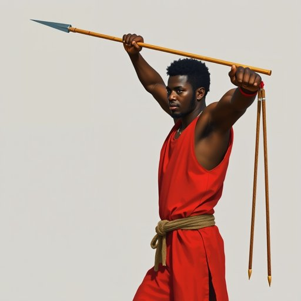

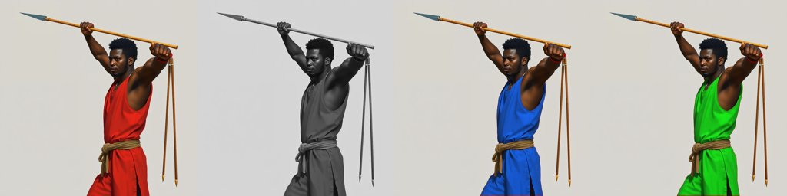
prompt
Gouache painting for a historical strategy game, flat opaque color shapes, simple graphic forms, matte paper texture, limited palette. A warrior raising a short throwing spear over his shoulder, ready to throw, two more spears in his other hand. He wears a plain solid bright red cotton tunic, one flat uniform red color reaching the knees. The figure is an Afro-Brazilian man of Central African Kongo and Mbundu descent, from the quilombo of Palmares in northeastern Brazil, a grown adult in his early thirties, with a mature face: a broad face, a strong jaw, a wide flat nose, dark eyes, faint expression lines around the eyes, deep dark brown skin, full lips, short tightly curled black hair and a short beard, a thick adult neck, broad shoulders and adult body proportions, a mature man of about thirty-five with a strong adult face and smile lines. Natural undyed cotton, palm fiber, wood and iron tones for everything except the red tunic. Waist-up portrait of one single person: the head, shoulders and hands fill the frame, the tool or weapon visible next to the body, three-quarter view, isolated on a plain flat light grey background.

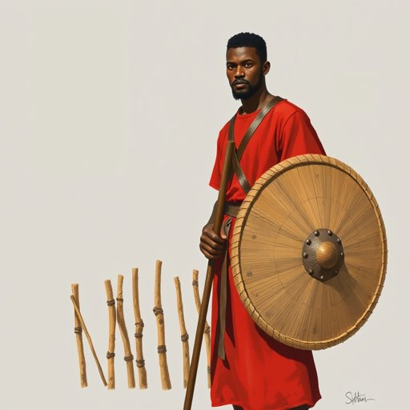

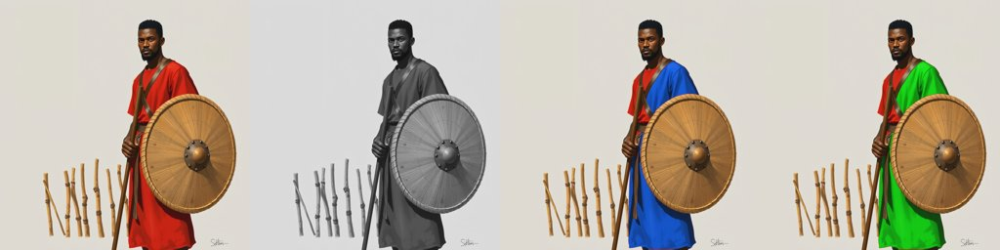
prompt
Gouache painting for a historical strategy game, flat opaque color shapes, simple graphic forms, matte paper texture, limited palette. A defender standing guard with a long spear and a round shield of woven palm fiber, a short row of sharpened log palisade stakes behind him. He wears a plain solid bright red cotton tunic, one flat uniform red color reaching the knees and a leather belt. The figure is an Afro-Brazilian man of Central African Kongo and Mbundu descent, from the quilombo of Palmares in northeastern Brazil, a grown adult in his early thirties, with a mature face: a broad face, a strong jaw, a wide flat nose, dark eyes, faint expression lines around the eyes, deep dark brown skin, full lips, short tightly curled black hair and a short beard, a thick adult neck, broad shoulders and adult body proportions, a mature man of about thirty-five with a strong adult face and smile lines. Natural undyed cotton, palm fiber, wood and iron tones for everything except the red tunic. Waist-up portrait of one single person: the head, shoulders and hands fill the frame, the tool or weapon visible next to the body, three-quarter view, isolated on a plain flat light grey background.

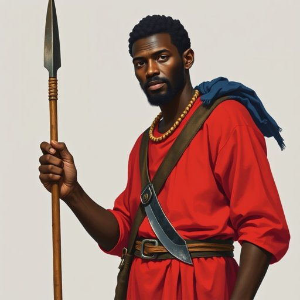

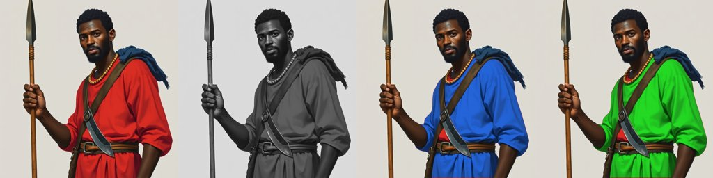
Sin glorificar a una persona (consulta a la CONAQ).
prompt
Gouache painting for a historical strategy game, flat opaque color shapes, simple graphic forms, matte paper texture, limited palette. A mature war leader holding a spear with a broad iron point, a long iron knife at a leather belt, a dark cloth cap and a wrapped indigo cloth over one shoulder. He wears a plain solid bright red cotton tunic, one flat uniform red color. The figure is an Afro-Brazilian man of Central African Kongo and Mbundu descent, from the quilombo of Palmares in northeastern Brazil, a grown adult in his early thirties, with a mature face: a broad face, a strong jaw, a wide flat nose, dark eyes, faint expression lines around the eyes, deep dark brown skin, full lips, short tightly curled black hair and a short beard, a thick adult neck, broad shoulders and adult body proportions, a mature man of about thirty-five with a strong adult face and smile lines. Natural undyed cotton, palm fiber, wood and iron tones for everything except the red tunic. Waist-up portrait of one single person: the head, shoulders and hands fill the frame, the tool or weapon visible next to the body, three-quarter view, isolated on a plain flat light grey background.
2 · Edificios, hitos y maravilla (un ícono por edificio) 20/20

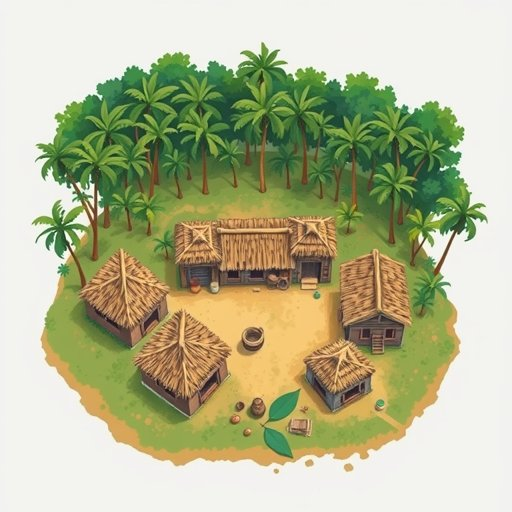
Los oficios: herrero, alfarero, cestero, tejedor de palma.
prompt
Gouache painting for a historical strategy game, flat opaque color shapes, simple graphic forms, matte paper texture, limited palette. A village in the forest: four small houses with palm-thatched roofs around a yard, a potter's kiln, palm baskets and a loom under a shade. Single building, three-quarter view from above like a strategy game icon, the whole building visible and centered, isolated on a plain flat light grey background. Architecture of the 17th-century quilombo of Palmares in the forested hills of the Serra da Barriga, northeastern Brazil: rectangular houses of wattle and daub (pau a pique) with steep roofs thatched with palm leaves, palisades of sharpened logs, tall native palm trees and dense green Atlantic forest around.

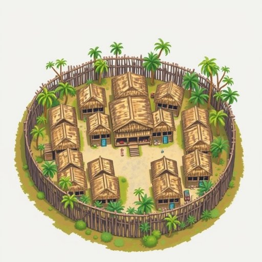
prompt
Gouache painting for a historical strategy game, flat opaque color shapes, simple graphic forms, matte paper texture, limited palette. A town enclosed by a tall palisade of sharpened logs: many palm-thatched houses inside, a larger house with a veranda in the middle, one wooden gate. Single building, three-quarter view from above like a strategy game icon, the whole building visible and centered, isolated on a plain flat light grey background. Architecture of the 17th-century quilombo of Palmares in the forested hills of the Serra da Barriga, northeastern Brazil: rectangular houses of wattle and daub (pau a pique) with steep roofs thatched with palm leaves, palisades of sharpened logs, tall native palm trees and dense green Atlantic forest around.

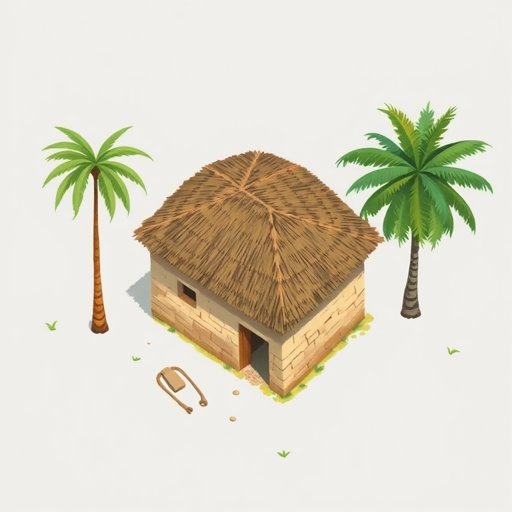
prompt
Gouache painting for a historical strategy game, flat opaque color shapes, simple graphic forms, matte paper texture, limited palette. A small rectangular house with walls of wattle and daub and a steep roof thatched with palm leaves, one doorway, a palm tree beside it. Single building, three-quarter view from above like a strategy game icon, the whole building visible and centered, isolated on a plain flat light grey background. Architecture of the 17th-century quilombo of Palmares in the forested hills of the Serra da Barriga, northeastern Brazil: rectangular houses of wattle and daub (pau a pique) with steep roofs thatched with palm leaves, palisades of sharpened logs, tall native palm trees and dense green Atlantic forest around.

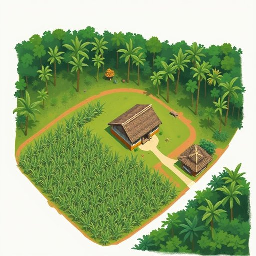
prompt
Gouache painting for a historical strategy game, flat opaque color shapes, simple graphic forms, matte paper texture, limited palette. A field of manioc plants in rows with maize and banana plants at the edge of the forest, a small thatched shelter. Single building, three-quarter view from above like a strategy game icon, the whole building visible and centered, isolated on a plain flat light grey background. Architecture of the 17th-century quilombo of Palmares in the forested hills of the Serra da Barriga, northeastern Brazil: rectangular houses of wattle and daub (pau a pique) with steep roofs thatched with palm leaves, palisades of sharpened logs, tall native palm trees and dense green Atlantic forest around.

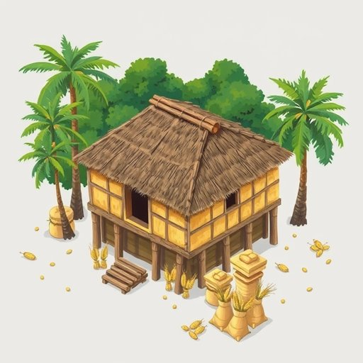
prompt
Gouache painting for a historical strategy game, flat opaque color shapes, simple graphic forms, matte paper texture, limited palette. A granary of wattle and palm thatch raised on wooden stilts, ears of maize and sacks of manioc flour beside it. Single building, three-quarter view from above like a strategy game icon, the whole building visible and centered, isolated on a plain flat light grey background. Architecture of the 17th-century quilombo of Palmares in the forested hills of the Serra da Barriga, northeastern Brazil: rectangular houses of wattle and daub (pau a pique) with steep roofs thatched with palm leaves, palisades of sharpened logs, tall native palm trees and dense green Atlantic forest around.

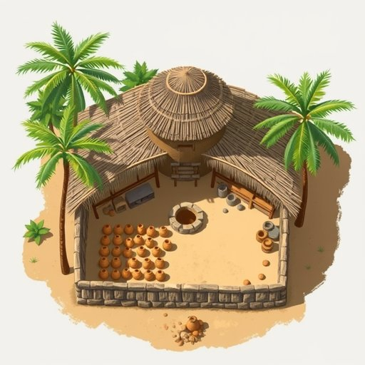
prompt
Gouache painting for a historical strategy game, flat opaque color shapes, simple graphic forms, matte paper texture, limited palette. An open palm-thatched shed with a dome-shaped clay kiln, rows of clay pots drying in the sun and a pile of clay. Single building, three-quarter view from above like a strategy game icon, the whole building visible and centered, isolated on a plain flat light grey background. Architecture of the 17th-century quilombo of Palmares in the forested hills of the Serra da Barriga, northeastern Brazil: rectangular houses of wattle and daub (pau a pique) with steep roofs thatched with palm leaves, palisades of sharpened logs, tall native palm trees and dense green Atlantic forest around.

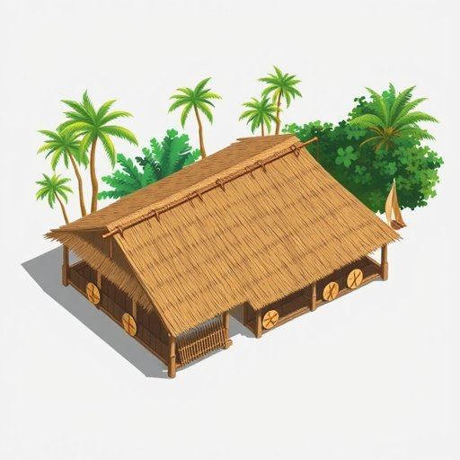
prompt
Gouache painting for a historical strategy game, flat opaque color shapes, simple graphic forms, matte paper texture, limited palette. A long palm-thatched house with open sides, spears and bows leaning in racks, round woven shields hanging on the posts. Single building, three-quarter view from above like a strategy game icon, the whole building visible and centered, isolated on a plain flat light grey background. Architecture of the 17th-century quilombo of Palmares in the forested hills of the Serra da Barriga, northeastern Brazil: rectangular houses of wattle and daub (pau a pique) with steep roofs thatched with palm leaves, palisades of sharpened logs, tall native palm trees and dense green Atlantic forest around.

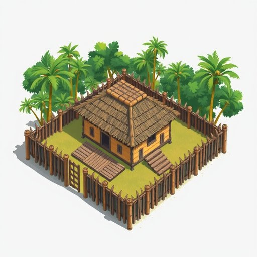
prompt
Gouache painting for a historical strategy game, flat opaque color shapes, simple graphic forms, matte paper texture, limited palette. A bastion of thick upright logs jutting out from a palisade, a raised wooden platform behind it, sharpened stakes stuck in the ground in front. Single building, three-quarter view from above like a strategy game icon, the whole building visible and centered, isolated on a plain flat light grey background. Architecture of the 17th-century quilombo of Palmares in the forested hills of the Serra da Barriga, northeastern Brazil: rectangular houses of wattle and daub (pau a pique) with steep roofs thatched with palm leaves, palisades of sharpened logs, tall native palm trees and dense green Atlantic forest around.

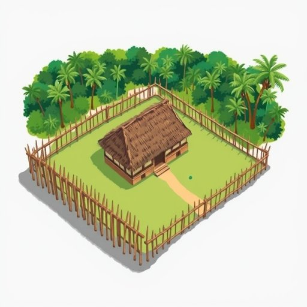
prompt
Gouache painting for a historical strategy game, flat opaque color shapes, simple graphic forms, matte paper texture, limited palette. A straight segment of a palisade of sharpened logs with many short sharpened stakes stuck slanting in the ground in front of it. Single building, three-quarter view from above like a strategy game icon, the whole building visible and centered, isolated on a plain flat light grey background. Architecture of the 17th-century quilombo of Palmares in the forested hills of the Serra da Barriga, northeastern Brazil: rectangular houses of wattle and daub (pau a pique) with steep roofs thatched with palm leaves, palisades of sharpened logs, tall native palm trees and dense green Atlantic forest around.

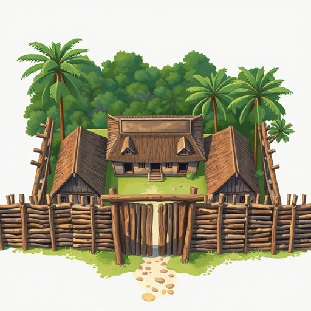
prompt
Gouache painting for a historical strategy game, flat opaque color shapes, simple graphic forms, matte paper texture, limited palette. A heavy wooden gate of logs in a palisade of sharpened logs. Single building, three-quarter view from above like a strategy game icon, the whole building visible and centered, isolated on a plain flat light grey background. Architecture of the 17th-century quilombo of Palmares in the forested hills of the Serra da Barriga, northeastern Brazil: rectangular houses of wattle and daub (pau a pique) with steep roofs thatched with palm leaves, palisades of sharpened logs, tall native palm trees and dense green Atlantic forest around.

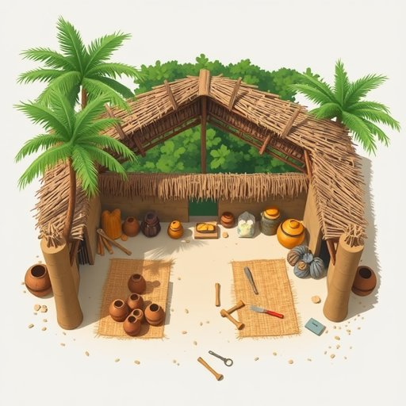
prompt
Gouache painting for a historical strategy game, flat opaque color shapes, simple graphic forms, matte paper texture, limited palette. An open palm-thatched shelter where goods are laid out on mats: clay pots, palm baskets, manioc flour, maize, iron tools. Single building, three-quarter view from above like a strategy game icon, the whole building visible and centered, isolated on a plain flat light grey background. Architecture of the 17th-century quilombo of Palmares in the forested hills of the Serra da Barriga, northeastern Brazil: rectangular houses of wattle and daub (pau a pique) with steep roofs thatched with palm leaves, palisades of sharpened logs, tall native palm trees and dense green Atlantic forest around.

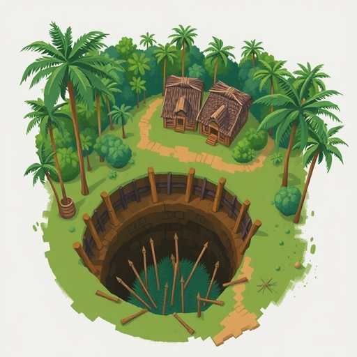
Los accesos de la cerca en 1692–1694.
prompt
Gouache painting for a historical strategy game, flat opaque color shapes, simple graphic forms, matte paper texture, limited palette. A hidden pit on a forest path with sharpened wooden stakes pointing up at the bottom, half covered with palm leaves and branches. Single building, three-quarter view from above like a strategy game icon, the whole building visible and centered, isolated on a plain flat light grey background. Architecture of the 17th-century quilombo of Palmares in the forested hills of the Serra da Barriga, northeastern Brazil: rectangular houses of wattle and daub (pau a pique) with steep roofs thatched with palm leaves, palisades of sharpened logs, tall native palm trees and dense green Atlantic forest around.

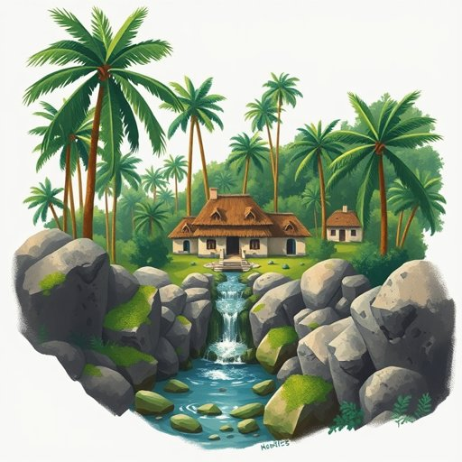
Solo el paisaje.
prompt
Gouache painting for a historical strategy game, flat opaque color shapes, simple graphic forms, matte paper texture, limited palette. A clear forest spring falling between large mossy rocks under tall palm trees, open sky. Single building, three-quarter view from above like a strategy game icon, the whole building visible and centered, isolated on a plain flat light grey background. Architecture of the 17th-century quilombo of Palmares in the forested hills of the Serra da Barriga, northeastern Brazil: rectangular houses of wattle and daub (pau a pique) with steep roofs thatched with palm leaves, palisades of sharpened logs, tall native palm trees and dense green Atlantic forest around.

El mocambo del rey (relatos de 1677). Sin la capilla.
prompt
Gouache painting for a historical strategy game, flat opaque color shapes, simple graphic forms, matte paper texture, limited palette. A large house with walls of wattle and daub, a long veranda on wooden posts and a high palm-thatched roof, facing a wide plaza with palm trees and smaller houses around. Single building, three-quarter view from above like a strategy game icon, the whole building visible and centered, isolated on a plain flat light grey background. Architecture of the 17th-century quilombo of Palmares in the forested hills of the Serra da Barriga, northeastern Brazil: rectangular houses of wattle and daub (pau a pique) with steep roofs thatched with palm leaves, palisades of sharpened logs, tall native palm trees and dense green Atlantic forest around.

prompt
Gouache painting for a historical strategy game, flat opaque color shapes, simple graphic forms, matte paper texture, limited palette. Huts with palm-thatched roofs on a steep forested hill, rows of sharpened stakes slanting out in front, a tall wooden lookout platform on poles. Single building, three-quarter view from above like a strategy game icon, the whole building visible and centered, isolated on a plain flat light grey background. Architecture of the 17th-century quilombo of Palmares in the forested hills of the Serra da Barriga, northeastern Brazil: rectangular houses of wattle and daub (pau a pique) with steep roofs thatched with palm leaves, palisades of sharpened logs, tall native palm trees and dense green Atlantic forest around.

Las tres cercas de la Barriga (Jorge Velho, 1692).
prompt
Gouache painting for a historical strategy game, flat opaque color shapes, simple graphic forms, matte paper texture, limited palette. Three rings of log palisade one inside another on a hilltop, with the gates of each ring offset, covered pits between the rings and houses in the center. Single building, three-quarter view from above like a strategy game icon, the whole building visible and centered, isolated on a plain flat light grey background. Architecture of the 17th-century quilombo of Palmares in the forested hills of the Serra da Barriga, northeastern Brazil: rectangular houses of wattle and daub (pau a pique) with steep roofs thatched with palm leaves, palisades of sharpened logs, tall native palm trees and dense green Atlantic forest around.

Forja, sin el rito.
prompt
Gouache painting for a historical strategy game, flat opaque color shapes, simple graphic forms, matte paper texture, limited palette. A large open forge shed with a palm-thatched roof, a glowing charcoal fire, bowl bellows covered with leather, an iron anvil and finished hoes and spear points on a rack. Single building, three-quarter view from above like a strategy game icon, the whole building visible and centered, isolated on a plain flat light grey background. Architecture of the 17th-century quilombo of Palmares in the forested hills of the Serra da Barriga, northeastern Brazil: rectangular houses of wattle and daub (pau a pique) with steep roofs thatched with palm leaves, palisades of sharpened logs, tall native palm trees and dense green Atlantic forest around.

Sin la bandera blanca (imagen europea, sin fuente).
prompt
Gouache painting for a historical strategy game, flat opaque color shapes, simple graphic forms, matte paper texture, limited palette. A village of palm-thatched houses in straight rows, fields of maize around it, a granary on stilts and palm trees. Single building, three-quarter view from above like a strategy game icon, the whole building visible and centered, isolated on a plain flat light grey background. Architecture of the 17th-century quilombo of Palmares in the forested hills of the Serra da Barriga, northeastern Brazil: rectangular houses of wattle and daub (pau a pique) with steep roofs thatched with palm leaves, palisades of sharpened logs, tall native palm trees and dense green Atlantic forest around.

Sin estandarte de Zumbi: no hay fuente de época.
prompt
Gouache painting for a historical strategy game, flat opaque color shapes, simple graphic forms, matte paper texture, limited palette. A steep forested hill with a palisade of sharpened logs around its top, houses inside, a large wooden drum beside the gate. Single building, three-quarter view from above like a strategy game icon, the whole building visible and centered, isolated on a plain flat light grey background. Architecture of the 17th-century quilombo of Palmares in the forested hills of the Serra da Barriga, northeastern Brazil: rectangular houses of wattle and daub (pau a pique) with steep roofs thatched with palm leaves, palisades of sharpened logs, tall native palm trees and dense green Atlantic forest around.

Los tres anillos (H-17).
prompt
Gouache painting for a historical strategy game, flat opaque color shapes, simple graphic forms, matte paper texture, limited palette. A great forested hill, the Serra da Barriga, with three rings of log palisade around its top, many palm-thatched houses and fields inside, a lake at its foot. Single building, three-quarter view from above like a strategy game icon, the whole building visible and centered, isolated on a plain flat light grey background. Architecture of the 17th-century quilombo of Palmares in the forested hills of the Serra da Barriga, northeastern Brazil: rectangular houses of wattle and daub (pau a pique) with steep roofs thatched with palm leaves, palisades of sharpened logs, tall native palm trees and dense green Atlantic forest around.
3 · Mejoras propias 8/8

Pindoba y catolé, no dendê.
antes: v1

prompt
Gouache painting for a historical strategy game, flat opaque color shapes, simple graphic forms, matte paper texture, limited palette. Yellow ears of maize, long thick brown-skinned manioc roots with white cut ends, purple sweet potatoes and short stalks of sugar cane piled on a large fan-shaped palm leaf. Single object centered, clear silhouette, isolated on a plain flat light grey background, three-quarter view.

prompt
Gouache painting for a historical strategy game, flat opaque color shapes, simple graphic forms, matte paper texture, limited palette. A tall wooden lookout platform built on four poles among palm trees, a ladder leaning on it. Single object centered, clear silhouette, isolated on a plain flat light grey background, three-quarter view.

Forja, no fundición; sin el rito del herrero.
prompt
Gouache painting for a historical strategy game, flat opaque color shapes, simple graphic forms, matte paper texture, limited palette. A pair of bowl bellows covered with leather membranes, iron tongs and a bed of glowing charcoal with a red-hot iron bar. Single object centered, clear silhouette, isolated on a plain flat light grey background, three-quarter view.

Esquivar flechas y tiros en orden abierto. No es capoeira (H-28).
prompt
Gouache painting for a historical strategy game, flat opaque color shapes, simple graphic forms, matte paper texture, limited palette. Two short spears crossed over a round woven palm-fiber shield, lying on the ground. Single object centered, clear silhouette, isolated on a plain flat light grey background, three-quarter view.

La institución de guerra que integraba a gente de cualquier origen; sin el rito.
prompt
Gouache painting for a historical strategy game, flat opaque color shapes, simple graphic forms, matte paper texture, limited palette. A circle of low carved wooden stools in the shade of a large tree, spears leaning against the trunk. Single object centered, clear silhouette, isolated on a plain flat light grey background, three-quarter view.

antes: v1

prompt
Gouache painting for a historical strategy game, flat opaque color shapes, simple graphic forms, matte paper texture, limited palette. A plain undecorated cloth sack of white salt, a small plain wooden keg, two iron hoe blades and a basket of manioc flour set together on a woven palm mat. Single object centered, clear silhouette, isolated on a plain flat light grey background, three-quarter view.

antes: v1

prompt
Gouache painting for a historical strategy game, flat opaque color shapes, simple graphic forms, matte paper texture, limited palette. Hand-forged dark iron spear points shaped like leaves and small iron arrowheads laid in a row on a flat block of wood beside a blacksmith's hammer. Single object centered, clear silhouette, isolated on a plain flat light grey background, three-quarter view.

prompt
Gouache painting for a historical strategy game, flat opaque color shapes, simple graphic forms, matte paper texture, limited palette. A bundle of sharpened wooden stakes tied together beside a small pit half covered with palm leaves. Single object centered, clear silhouette, isolated on a plain flat light grey background, three-quarter view.
4 · Accesorios (herramientas y armas para el 3D) 10/10

prompt
Gouache painting for a historical strategy game, flat opaque color shapes, simple graphic forms, matte paper texture, limited palette. A long spear with a straight wooden shaft and a broad leaf-shaped iron point. Single object for a 3D model reference, side view, centered, whole object visible, plain flat light grey background, even light.

prompt
Gouache painting for a historical strategy game, flat opaque color shapes, simple graphic forms, matte paper texture, limited palette. Three short throwing spears with thin wooden shafts and small iron points, tied together. Single object for a 3D model reference, side view, centered, whole object visible, plain flat light grey background, even light.

prompt
Gouache painting for a historical strategy game, flat opaque color shapes, simple graphic forms, matte paper texture, limited palette. A long curved wooden bow with its string, lying beside two long arrows with iron points. Single object for a 3D model reference, side view, centered, whole object visible, plain flat light grey background, even light.

prompt
Gouache painting for a historical strategy game, flat opaque color shapes, simple graphic forms, matte paper texture, limited palette. A long straight iron knife with a wide blade and a wooden handle. Single object for a 3D model reference, side view, centered, whole object visible, plain flat light grey background, even light.

prompt
Gouache painting for a historical strategy game, flat opaque color shapes, simple graphic forms, matte paper texture, limited palette. A round shield of tightly woven palm fiber with a wooden handle at the back. Single object for a 3D model reference, side view, centered, whole object visible, plain flat light grey background, even light.

prompt
Gouache painting for a historical strategy game, flat opaque color shapes, simple graphic forms, matte paper texture, limited palette. A 17th-century matchlock long gun with a wooden stock and a long iron barrel. Single object for a 3D model reference, side view, centered, whole object visible, plain flat light grey background, even light.

antes: v1 v2


prompt
Gouache painting for a historical strategy game, flat opaque color shapes, simple graphic forms, matte paper texture, limited palette. A simple garden hoe lying flat: a wide flat rectangular iron blade, as wide as a hand, attached to the end of a long straight wooden handle. Single object for a 3D model reference, side view, centered, whole object visible, plain flat light grey background, even light.

prompt
Gouache painting for a historical strategy game, flat opaque color shapes, simple graphic forms, matte paper texture, limited palette. An axe with an iron blade fixed in a wooden handle. Single object for a 3D model reference, side view, centered, whole object visible, plain flat light grey background, even light.

prompt
Gouache painting for a historical strategy game, flat opaque color shapes, simple graphic forms, matte paper texture, limited palette. A tall wooden mortar carved from a tree trunk with a long wooden pestle leaning in it. Single object for a 3D model reference, side view, centered, whole object visible, plain flat light grey background, even light.

prompt
Gouache painting for a historical strategy game, flat opaque color shapes, simple graphic forms, matte paper texture, limited palette. A tall woven basket of palm fiber with a carrying strap. Single object for a 3D model reference, side view, centered, whole object visible, plain flat light grey background, even light.
5 · Hojas para el 3D por edad (lo único por edad) 8/8


prompt
Gouache painting for a historical strategy game, flat opaque color shapes, simple graphic forms, matte paper texture, limited palette. Character turnaround reference sheet for 3D modeling: the same person shown side by side in front view and in side profile view, the same headwear and clothing in every view, standing in A-pose with arms held straight and out at 45 degrees from the body, open empty hands. Clothing: a plain solid bright red cotton tunic, one flat uniform red color, reaching the knees; a palm-fiber cord belt; bare head; barefoot. The person is an Afro-Brazilian man of Central African Kongo and Mbundu descent, from the quilombo of Palmares in northeastern Brazil, a grown adult in his early thirties, with a mature face: a broad face, a strong jaw, a wide flat nose, dark eyes, faint expression lines around the eyes, deep dark brown skin, full lips, short tightly curled black hair and a short beard, a thick adult neck, broad shoulders and adult body proportions, a mature man of about thirty-five with a strong adult face and smile lines. Natural undyed cotton, palm fiber, wood and iron tones for everything except the red tunic. Even flat studio light, plain flat light grey background.


prompt
Gouache painting for a historical strategy game, flat opaque color shapes, simple graphic forms, matte paper texture, limited palette. Character turnaround reference sheet for 3D modeling: the same person shown side by side in front view and in side profile view, the same headwear and clothing in every view, standing in A-pose with arms held straight and out at 45 degrees from the body, open empty hands. Clothing: a plain solid bright red cotton tunic, one flat uniform red color, reaching the knees; a necklace of beads; a plain cloth head wrap; barefoot. The person is an Afro-Brazilian man of Central African Kongo and Mbundu descent, from the quilombo of Palmares in northeastern Brazil, a grown adult in his early thirties, with a mature face: a broad face, a strong jaw, a wide flat nose, dark eyes, faint expression lines around the eyes, deep dark brown skin, full lips, short tightly curled black hair and a short beard, a thick adult neck, broad shoulders and adult body proportions, a mature man of about thirty-five with a strong adult face and smile lines. Natural undyed cotton, palm fiber, wood and iron tones for everything except the red tunic. Even flat studio light, plain flat light grey background.


prompt
Gouache painting for a historical strategy game, flat opaque color shapes, simple graphic forms, matte paper texture, limited palette. Character turnaround reference sheet for 3D modeling: the same person shown side by side in front view and in side profile view, the same headwear and clothing in every view, standing in A-pose with arms held straight and out at 45 degrees from the body, open empty hands. Clothing: a plain solid bright red cotton tunic, one flat uniform red color, reaching the knees; an indigo cloth wrapped over one shoulder; a necklace of beads; a woven palm bag; barefoot. The person is an Afro-Brazilian man of Central African Kongo and Mbundu descent, from the quilombo of Palmares in northeastern Brazil, a grown adult in his early thirties, with a mature face: a broad face, a strong jaw, a wide flat nose, dark eyes, faint expression lines around the eyes, deep dark brown skin, full lips, short tightly curled black hair and a short beard, a thick adult neck, broad shoulders and adult body proportions, a mature man of about thirty-five with a strong adult face and smile lines. Natural undyed cotton, palm fiber, wood and iron tones for everything except the red tunic. Even flat studio light, plain flat light grey background.


prompt
Gouache painting for a historical strategy game, flat opaque color shapes, simple graphic forms, matte paper texture, limited palette. Character turnaround reference sheet for 3D modeling: the same person shown side by side in front view and in side profile view, the same headwear and clothing in every view, standing in A-pose with arms held straight and out at 45 degrees from the body, open empty hands. Clothing: a plain solid bright red cotton tunic, one flat uniform red color, reaching the knees; a straw hat, worn in every view; a leather belt with a knife; an indigo cloth over one shoulder; leather sandals. The person is an Afro-Brazilian man of Central African Kongo and Mbundu descent, from the quilombo of Palmares in northeastern Brazil, a grown adult in his early thirties, with a mature face: a broad face, a strong jaw, a wide flat nose, dark eyes, faint expression lines around the eyes, deep dark brown skin, full lips, short tightly curled black hair and a short beard, a thick adult neck, broad shoulders and adult body proportions, a mature man of about thirty-five with a strong adult face and smile lines. Natural undyed cotton, palm fiber, wood and iron tones for everything except the red tunic. Even flat studio light, plain flat light grey background.


prompt
Gouache painting for a historical strategy game, flat opaque color shapes, simple graphic forms, matte paper texture, limited palette. Character turnaround reference sheet for 3D modeling: the same person shown side by side in front view and in side profile view, the same headwear and clothing in every view, standing in A-pose with arms held straight and out at 45 degrees from the body, open empty hands. Clothing: a plain solid bright red cotton tunic, one flat uniform red color, reaching the knees; bare head; barefoot. The person is an Afro-Brazilian man of Central African Kongo and Mbundu descent, from the quilombo of Palmares in northeastern Brazil, a grown adult in his early thirties, with a mature face: a broad face, a strong jaw, a wide flat nose, dark eyes, faint expression lines around the eyes, deep dark brown skin, full lips, short tightly curled black hair and a short beard, a thick adult neck, broad shoulders and adult body proportions, a mature man of about thirty-five with a strong adult face and smile lines. Natural undyed cotton, palm fiber, wood and iron tones for everything except the red tunic. Even flat studio light, plain flat light grey background.


prompt
Gouache painting for a historical strategy game, flat opaque color shapes, simple graphic forms, matte paper texture, limited palette. Character turnaround reference sheet for 3D modeling: the same person shown side by side in front view and in side profile view, the same headwear and clothing in every view, standing in A-pose with arms held straight and out at 45 degrees from the body, open empty hands. Clothing: a plain solid bright red cotton tunic, one flat uniform red color, reaching the knees; a necklace of beads; an indigo cloth band around the head; a round woven shield on the back; barefoot. The person is an Afro-Brazilian man of Central African Kongo and Mbundu descent, from the quilombo of Palmares in northeastern Brazil, a grown adult in his early thirties, with a mature face: a broad face, a strong jaw, a wide flat nose, dark eyes, faint expression lines around the eyes, deep dark brown skin, full lips, short tightly curled black hair and a short beard, a thick adult neck, broad shoulders and adult body proportions, a mature man of about thirty-five with a strong adult face and smile lines. Natural undyed cotton, palm fiber, wood and iron tones for everything except the red tunic. Even flat studio light, plain flat light grey background.


prompt
Gouache painting for a historical strategy game, flat opaque color shapes, simple graphic forms, matte paper texture, limited palette. Character turnaround reference sheet for 3D modeling: the same person shown side by side in front view and in side profile view, the same headwear and clothing in every view, standing in A-pose with arms held straight and out at 45 degrees from the body, open empty hands. Clothing: a plain solid bright red cotton tunic, one flat uniform red color, reaching the knees; an ochre cloth sash; a leather belt with a long knife in a sheath; an indigo cloth band around the head; a round woven shield on the back; barefoot. The person is an Afro-Brazilian man of Central African Kongo and Mbundu descent, from the quilombo of Palmares in northeastern Brazil, a grown adult in his early thirties, with a mature face: a broad face, a strong jaw, a wide flat nose, dark eyes, faint expression lines around the eyes, deep dark brown skin, full lips, short tightly curled black hair and a short beard, a thick adult neck, broad shoulders and adult body proportions, a mature man of about thirty-five with a strong adult face and smile lines. Natural undyed cotton, palm fiber, wood and iron tones for everything except the red tunic. Even flat studio light, plain flat light grey background.


prompt
Gouache painting for a historical strategy game, flat opaque color shapes, simple graphic forms, matte paper texture, limited palette. Character turnaround reference sheet for 3D modeling: the same person shown side by side in front view and in side profile view, the same headwear and clothing in every view, standing in A-pose with arms held straight and out at 45 degrees from the body, open empty hands. Clothing: a plain solid bright red cotton tunic, one flat uniform red color, reaching the knees; a leather bandolier with a powder horn across the chest; a leather belt; a dark cloth cap, worn in every view; leather sandals. The person is an Afro-Brazilian man of Central African Kongo and Mbundu descent, from the quilombo of Palmares in northeastern Brazil, a grown adult in his early thirties, with a mature face: a broad face, a strong jaw, a wide flat nose, dark eyes, faint expression lines around the eyes, deep dark brown skin, full lips, short tightly curled black hair and a short beard, a thick adult neck, broad shoulders and adult body proportions, a mature man of about thirty-five with a strong adult face and smile lines. Natural undyed cotton, palm fiber, wood and iron tones for everything except the red tunic. Even flat studio light, plain flat light grey background.